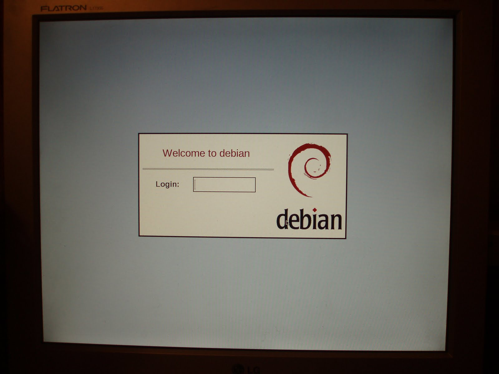

После перехода с Lenny на Squeeze начал пользоваться xdm. Сегодня дошли руки до настройки более приятного вида этого дисплейного менеджера.
В файл /etc/X11/xdm/Xresources я добавил следующие строчки:
xlogin.Login.x: 320 xlogin.Login.y: 352 xlogin.Login.width: 640 xlogin.Login.height: 320 xlogin.Login.foreground: black xlogin.Login.face: Liberation Sans-18 xlogin.Login.greeting: Welcome to CLIENTHOST xlogin.Login.greetFace: Liberation Sans-24 xlogin.Login.greetColor: darkred xlogin.Login.namePrompt: Login: xlogin.Login.passwdPrompt: Password: xlogin.Login.promptFace: Liberation Sans-18:bold xlogin.Login.promptColor: black xlogin.Login.fail: Login incorrect xlogin.Login.failFace: Liberation Sans-18 xlogin.Login.failColor: red xlogin.Login.failTimeout: 5 xlogin.Login.hiColor: black xlogin.Login.shdColor: black xlogin.Login.frameWidth: 3 xlogin.Login.innerFrameWidth: 3 xlogin.Login.sepWidth: 1 xlogin.Login.logoFileName: /usr/share/X11/xdm/pixmaps/debian.xpm xlogin.Login.logoPadding: 10 xlogin.Login.useShape: true
В файл /etc/X11/xdm/Xsetup поместил следующую строчку:
$ xsetroot -solid grey
Если кому интересно, как запустить два X-сервера, то на всякий случай описываю и это. В файл /etc/X11/xdm/Xservers нужно прописать желаемое количество локальных X-серверов (мне хватает двух - один на консоли 7, второй на консоли 8):
:0 local /usr/bin/X :0 vt7 -nolisten tcp :1 local /usr/bin/X :1 vt8 -nolisten tcp
Соответственно, вид настроенного xdm показан на нижеследующей фотографии:
К сожалению, снимок экрана программно сделать не удалось, хотя я знаю о существовании Xnest и Xephyr, но мне лень было с ними разбираться ради такой ерунды.